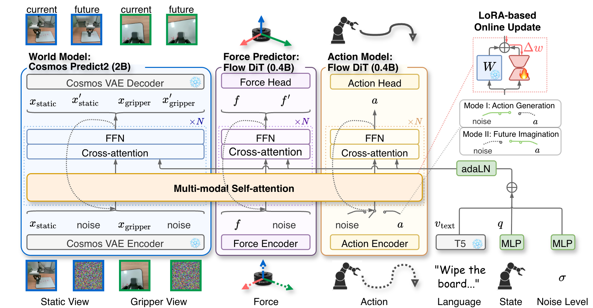
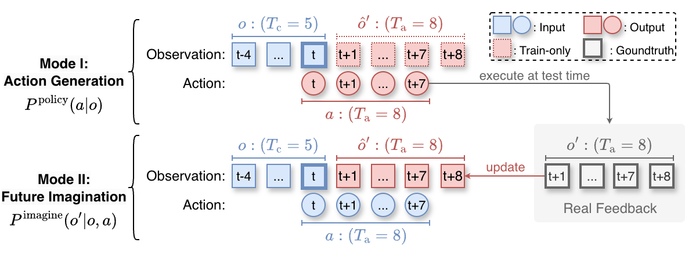
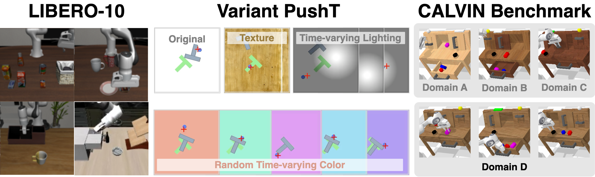
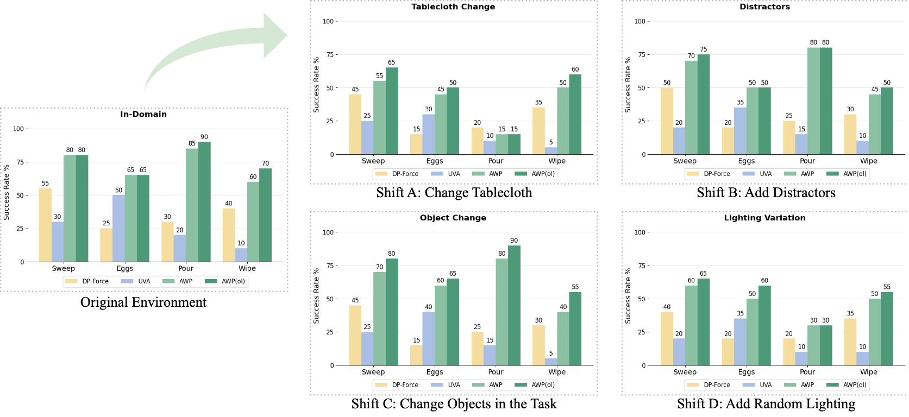

AdaWorldPolicy: World-Model-Driven Diffusion Policy with Online Adaptive Learning for Robotic Manipulation
1. Quick overview of the paper
| What should the paper solve? | Robots will encounter visual perturbations, object/mechanics changes, and physical contact distribution shifts in dynamic real-world environments and contact-rich tasks; it is difficult to self-correct with real feedback during testing by relying solely on offline imitation or VLA-style reactive policies. |
|---|---|
| The author's approach | Turn the world model from "offline predictor/validator" to active supervisor: first generate actions, then use the Future Imagination mode of the same network to predict future observations after execution, and use the difference between predictions and real feedback as the test-time adaptation signal. |
| most important results | LIBERO-10 full multimodal success 0.96; Variant PushT under texture / random light / random color OOD AWP(ol) reaches 0.51 / 0.77 / 0.66, both higher than AWP; CALVIN ABC→D average completion length AWP(ol) is 3.54; real task in-domain average full method in the ablation table is 76.3%. |
| Things to note when reading | AdaOL updates LoRA parameters online, not simple re-planning; real-world results are mainly presented in bar graphs, without trial-by-trial tables, but the appendix supplements the evaluation protocol, success criteria, TTA two-stage process and key hyper-parameters. |
World Model Diffusion Policy Flow Matching Test-Time Adaptation Force Feedback LoRA

core contribution
- Unified multimodal diffusion framework.The world model, action model, and force predictor are all implemented as Flow Matching DiT and exchange information via MMSA.
- AdaOL was adapted online during testing.The model self-supervisedly updates a small number of LoRA parameters based on the gap between real feedback and imagined future to reduce visual and physical domain shift.
- Access force-torque feedback.Force Predictor predicts future force readings for handling dynamic force shift in contact-rich tasks.
- Multiple benchmark verification.Covers LIBERO-10, Variant PushT, CALVIN and 4 real robot tasks, and adds sampling step, MMSA, future frame visualization and implementation details in the appendix.
2. Motivation and related work
2.1 Why ordinary VLA is not enough
The paper points out that although the VLA model can combine language, vision and action, it usually relies on a large number of human demonstrations and has limited generalization in unseen or dynamically changing contact-rich scenes. The fundamental reason is that most of them are reactive mappings trained offline: the current observation comes in and the action is directly output, lacking a mechanism to explicitly predict the physical consequences and use real feedback to correct itself.
2.2 Why should we put the world model into a closed loop?
There are existing world models that are often used as "digital twin" or offline validators in robots; there are also WorldVLA, UVA, etc. that unify action generation and world prediction. However, the author believes that most of these methods are still offline training strategies and cannot adapt quickly when faced with visual and dynamic changes during deployment. The core motivation of AdaWorldPolicy is that the prediction error of the world model itself is a self-supervised signal, which can continuously correct the action model, world model and force predictor during testing.
| Related directions | Positioning with existing methods | AdaWorldPolicy Differences |
|---|---|---|
| World Models for Robotic Control | Dreamer, Cosmos, Dino-WM, etc. for dynamics prediction, planning or policy validation. | The world model does not just predict or verify, but actively generates online adaptation loss. |
| Diffusion Models for Decision Making | Diffusion Policy etc. model action trajectories as diffusion processes and are good at multi-modal action distribution. | Add future outcome modeling and force prediction to the diffusion policy to constrain the physical consistency of the action. |
| Online Adaptation for Robotics | TTA, LoRA, confidence maximization, etc. adjust model parameters during testing. | Using world-model prediction error and force discrepancy as robot-specific self-supervised update signals. |
3. Detailed explanation of method
3.1 Problem setting
The multi-modal historical observation $o=\{x_{\text{static}}, x_{\text{gripper}}, f\}$ is input at each moment, including static camera sequence, gripper camera sequence and force-torque readings. The three share the context length $T_c$. The model outputs the future action sequence $a=a_{t: t+T_a-1}$. The goal is to use its own interactive data $\{(o_t, a_t, o_{t+1})\}_{t=0}^{T}$ to update the parameters $\theta_t$ to $\theta_{t+1}$ in a test environment without adding new manual annotations or demonstrations.

3.2 Three modules
| module | input/output | function | scale |
|---|---|---|---|
| World Model | Input the current static/gripper angle of view and action conditions; output the future visual state $x'_{\text{static}}, x'_{\text{gripper}}$. | Predict the visual consequences of actions and provide AdaOL self-supervised signals. | Cosmos-Predict2 2B. |
| Force Predictor | Inputs current status and action; outputs future force-torque reading $f'$. | Supplement the contact dynamics invisible to the visual world model and alleviate force shift. | Real world 0.4B; removed when simulation has no force. |
| Action Model | Mode I inputs noise action tokens and denoise; Mode II inputs known actions as conditions. | Generates an action; or becomes an action-conditioned condition in Future Imagination. | Real world 0.4B; simulation can increase to 0.6B. |
3.3 Dual mode: same network, two roles

3.4 Multi-perspective expansion of World Model
The paper extends Cosmos-Predict2 from single-view video prediction to multi-view input: each camera view first obtains tokens through Cosmos VAE, and then splices along the temporal dimension; different views use independent RoPE to maintain the spatial and temporal structure across views. The input token is also equipped with a binary mask, where 1 represents the known condition and 0 represents the prediction target; after final denoising, the condition part will be replaced by the original input to ensure that the condition observation is not contaminated by the model generation results.
3.5 Multi-modal Self-Attention
MMSA is the bridge between the three modules. It is not a simple concat, nor is it a one-way cross-attention, but allows world / force / action to generate QKV respectively, and then performs self-attention after splicing the token dimension. In this way, the three can query each other's information while retaining their own dedicated representation space.
What MMSA is doing: putting the attention requests of three experts, world, force, and action, into the same attention field to communicate with each other.
$$\text{MMSA}(Q, K, V)=A([Q_x, Q_f, Q_a], [K_x, K_f, K_a], [V_x, V_f, V_a])$$| $x$ | World Model / visual tokens. |
| $f$ | Force Predictor / force tokens. |
| $a$ | Action Model / action tokens. |
| $A$ | Standard self-attention operations. |
3.6 AdaOL online adaptation loop
AdaOL runs a closed loop after each execution: generate an action, execute it, receive real feedback, imagine future results of the same action, calculate the error, update a small number of parameters with LoRA. The author emphasizes that only low-rank matrices are updated, the proportion is less than 0.1%, and the online update overhead is controllable.
AdaOL loss compares: what the model thinks the action will cause and what actually happens in the real world.
$$\mathcal{L}_{\text{AdaOL}}=\|E(o_{t+1})-E(\hat{o}_{t+1})\|_2^2$$$E(\cdot)$ is the Cosmos VAE encoder. This error generates the correction gradient $\Delta w$, which is used for LoRA online updates.
4. Mathematical forms and training objectives
4.1 Action Generation loss
Here $a_k$ is the noised action, $\mathbf{u}_\theta$ is the flow vector field predicted by the model, and $\mathbf{v}_k$ is the Flow Matching target vector field. This loss training model denoises the action $a$ from the current observation $o$.
4.2 Future Imagination loss
$o'_k$ is a noised future observation; here the action $a$ is a known condition. It trains the world/force/action shared system to predict "what will happen after performing this action".
4.3 Joint objective
Two modes are randomly switched during training: training action generation with probability $p_a$, otherwise training future imagination. This design enables the model to learn to be both a policy and an action-conditioned world model simultaneously.
5. Experiments and results
5.1 Experimental setup
| settings | content |
|---|---|
| Simulation benchmark | LIBERO-10 measures long-range combination skills; Variant PushT measures texture, random lighting, and random color OOD; CALVIN uses ABC→D cross-domain protocol, and each sequence completes 5 tasks in a row. |
| real robot | 6-DoF robotic arm, gripper camera, wrist-mounted force-torque sensor and third-person static camera; tasks include Sweep Beans, Pick-and-Place Eggs, Pour Water, Wipe Whiteboard. |
| Offline training | PyTorch + Cosmos-Predict2; 8 A100 80GB; AdamW; global batch size 64 to 256; LR $1\times10^{-4}$, linear attenuation to 1% in up to 20k steps after loss plateau. |
| online learning | Single NVIDIA RTX 5880 48GB; LoRA rank 16, only placed in the first 4 layers of each backbone; each incoming sample does 2 gradient steps, LR $5\times10^{-7}$; the average TTA inference speed is only about 5% slower than without adaptation. |

5.2 LIBERO-10
| Setting | Method | Static Camera | Gripper Camera | Joint States | Success |
|---|---|---|---|---|---|
| Static only | UVA | Yes | No | No | 0.89 |
| Static only | AWP | Yes | No | No | 0.91 |
| Full multimodal | OpenVLA | Yes | Yes | Yes | 0.54 |
| Full multimodal | MODE | Yes | Yes | Yes | 0.94 |
| Full multimodal | OpenVLA-OFT | Yes | Yes | Yes | 0.94 |
| Full multimodal | AWP | Yes | Yes | Yes | 0.96 |
LIBERO-10 results prove that the AWP architecture itself is already strong without online adaptation: static-only super UVA, full multimodal super MODE and OpenVLA-OFT.
5.3 Variant PushT: OOD robustness
| Method | Original | Texture | Rand Light | Rand Color |
|---|---|---|---|---|
| Diffusion Policy | 0.78 | 0.18 | 0.14 | 0.11 |
| OpenVLA | 0.35 | 0.22 | 0.20 | 0.14 |
| UniPi | 0.42 | 0.35 | 0.33 | 0.18 |
| UVA | 0.94 | 0.11 | 0.54 | 0.13 |
| AWP | 0.97 | 0.47 | 0.71 | 0.61 |
| AWP (ol) | 0.98 | 0.51 | 0.77 | 0.66 |
AdaOL is best seen here: AWP is already stronger than most baselines, but online learning continues to bring improvements on all OOD variants, especially random lighting from 0.71 to 0.77, and random color from 0.61 to 0.66.
5.4 CALVIN ABC→D
| Method | Len 1 | Len 2 | Len 3 | Len 4 | Len 5 | Avg. Len. |
|---|---|---|---|---|---|---|
| OpenVLA | 91.3 | 77.8 | 62.0 | 52.1 | 43.5 | 3.27 |
| MoDE | 91.5 | 79.2 | 67.3 | 55.8 | 45.3 | 3.39 |
| GR-MG | 91.0 | 79.1 | 67.8 | 56.9 | 47.7 | 3.42 |
| AWP | 91.8 | 79.2 | 68.5 | 62.8 | 48.0 | 3.51 ± 0.03 |
| AWP (ol) | 92.0 | 79.6 | 68.6 | 63.0 | 48.0 | 3.54 ± 0.04 |
The increments for online learning on CALVIN are smaller but consistent: average length 3.51 to 3.54, with length 5 remaining at 48.0. The author explains this as TTA being able to fine-tune policies that have generalized well.
5.5 Real robot tasks


The appendix complements the real-world protocol: 150 expert demonstrations collected in-domain per task; 30 trials per model configuration per task/distribution, up to 1500 execution steps. AdaOL testing is divided into two phases: Trials 1-15 are continuously updated online, and Trials 16-30 freeze the updated model to evaluate the stability of the adapted policy.
5.6 Ablation
| Configuration | Success Rate | meaning |
|---|---|---|
| AdaWorldPolicy w/ AdaOL | 76.3 | Full method, real in-domain four-task averaging. |
| AdaWorldPolicy w/o AdaOL | 72.5 | Updated online without testing, down 3.8. |
| w/o Force Predictor | 53.8 | Remove force prediction, and contact-rich tasks degrade significantly. |
| w/o World Model Supervision | 46.3 | Degenerating into a behavioral cloning strategy shows that world supervision is the core. |
| MMSA → Concatenation | 36.3 | Simple splicing cannot effectively integrate modules. |
| MMSA → Cross-Attention | 50.0 | Normal cross-attention is still weaker than MMSA. |
5.7 Appendix supplement: sampling steps, imagined future and super parameters
| Appendix experiment | key results | Integrate location |
|---|---|---|
| Sampling steps on LIBERO | AWP 20/10/5/2 steps are 96.33 / 95.53 / 94.67 / 94.00 respectively; reducing steps only slightly reduces performance. | Speed and accuracy can be traded off when reproducing. |
| AdaOL on LIBERO | Improved from 95.53 to 96.05 in 10 steps. | It shows that AdaOL also has small gains in slight distribution differences. |
| MMSA fusion | MMSA 95.53, Concat 89.67, Cross-Attention 91.21. | The necessity of reinforcing the MMSA in the main text ablation. |
| Imagined future visualization | The imagined future of PushT, CALVIN, and LIBERO is basically consistent with real observation; there will be blur/artifacts in complex backgrounds and egg tasks in real scenes. | Supporting a world model provides supervision but also reveals vision generation limitations. |


6. Repeat audit
6.1 Public resource status
The source code does not provide complete training code with arXiv.The paper only gives the project homepage in the abstract AdaWorldPolicy.github.io, there are no GitHub or checkpoint links in the LaTeX source code. The appendix mentions that the supplementary zip contains the local video web page `AdaWorldPolicy_Homepage/index.html`, but the folder is not included in the arXiv e-print.
6.2 Key hyperparameters
| Benchmark | Image Size | History Length | Action Horizon | # Imagined Frames |
|---|---|---|---|---|
| LIBERO10 | 128 × 128 | 5 | 20 | 20 |
| PushT | 256 × 256 | 5 | 20 | 20 |
| CALVIN | 192 × 192 | 1 | 12 | 12 |
| Real-world | 112 × 160 | 1 | 32 | 4 |
Real-world use of sparse prediction: imagined frames are only 4, while the action horizon is 32, covering the action time span with sparse future frames to reduce video generation latency.
6.3 Data processing and force data
- In the real task, 150 expert demonstrations were collected in each in-domain environment, using PS5 controller teleoperation, and mapping the force sensor readings to handle vibrations to provide feedback to the operator.
- Force readings do not have stable upper and lower bounds like pixels or relative poses; the appendix explains the use of quantile-based normalization, that is, scaling by 1st and 99th percentile to mitigate outlier/spike effects.
- DP baseline has also been enhanced to DP-Force: concat 6D force data and image observation features, and then fuse them through Transformer cross-attention to ensure fair comparison of real experiments.
6.4 Recurring gaps
- The complete code, model weights and data download path are not provided; the reproducibility framework can only be described based on the paper.
- The values in the real-world graph come from histograms, and the main text does not have a trial-by-trial table; the appendix only gives the protocol and success criteria, but does not have a complete real rollout table.
- The specific fine-tuning configuration of Cosmos-Predict2 depends on the original implementation; the paper states "largely follow training recipe", but does not list all scheduler, augmentation, and LoRA target module details.
- The online update measured about 5% slowdown on RTX 5880, but did not give details on the absolute latency and batch/sequence padding of each step.
7. Analysis, Limitations and Boundaries
7.1 The most valuable part of this paper
The most valuable point is to turn the world model error into an online learning signal, instead of just using the world model as a rollout visualizer or offline evaluator. The PushT OOD table, real-world domain shift diagram and ablation in the main article all point to the same Affiliations: when visual or physical conditions change, AWP(ol) is continuously modified through real feedback, which is more stable than a fixed offline policy.
7.2 Why the results hold up
The evidence chain of the paper covers two levels: "offline capability" and "online adaptation": LIBERO/CALVIN shows that the base AWP architecture itself is strong; PushT OOD and real domain shift show the increment brought by AdaOL; ablation shows that removing world supervision, force predictor or MMSA all decrease significantly. The sampling-step and imagined-future visualizations in the appendix further illustrate that the futures generated by the world model, while not photo-perfect, are structurally usable as supervision.
7.3 Limitations and future directions described by the author
- OOD generalization of world models is still not perfect.The appendix clearly states that Cosmos-Predict2 will experience future frame quality degradation under significant domain shifts, continuously changing lighting, and complex real-world scenes.
- AdaOL hyperparameters are fixed.The author does not adjust AdaOL hyperparameters for each task or environment; adaptive or meta-learning can be used to automatically adjust them in the future.
- Long-range planning failures remain to be addressed.The conclusion states that long-horizon planning failures will be further addressed in the future and extended to larger network architectures.
7.4 Applicable boundaries
AdaWorldPolicy is suitable for scenarios where there is continuous observation feedback, a small amount of update overhead can be tolerated during testing, and the world prediction error is related to the success or failure of the task. For scenarios that require strict safety constraints, cannot update parameters online, or have weak correlation between visual future prediction and real control objectives, the paper does not provide sufficient verification.